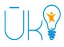

|  | Stepping Stone to Tech Life A joint initative by Yarl It Hub & |
|
Welcome to Uki steping stone to Tech lifeUki is a Coding School by Yarl IT Hub, which offers a six months long intensive, in class training program that trains students to acquire skills needed to join tech companies as interns/ junior developers or become entrepreneurs. | ||
CoursesOur vision is focusing to teach coding for students
|
Coding Acclator ProgrammeWe usually open applications 1 to 2 months in advance. You will see the next batch dates of the city you’re interested in on our facebook page and Uki.life website. If you are unsure about anything, feel free to reach out to the center manager – she/he will gladly answer all of your questions. |